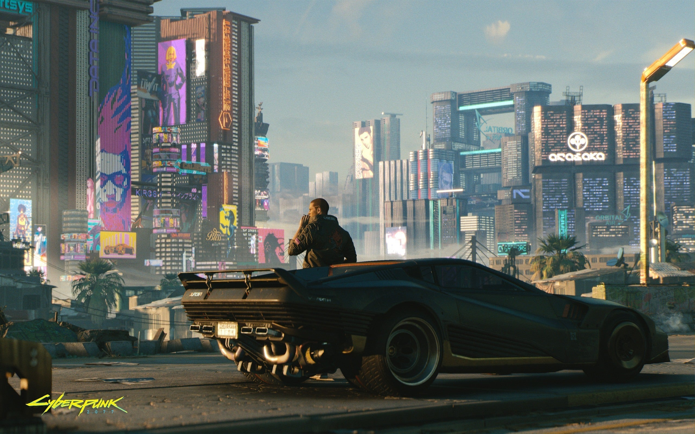

KIBERPANKAS: 2077:
Žaidimas "Kiberpankas 2077" (Cyberpunk 2077) yra veiksmo vaidmenų žaidimas, sukurtas CD Projekt Red. Jis buvo išleistas 2020 metų gruodžio mėnesį ir yra pagrįstas Mike'o Pondsmitho sukurtu "Cyberpunk" žaidimų pasauliu. Žaidimas vyksta distopiniame ateities mieste, vadinamame Night City, kuriame technologijos ir korporacijos valdo visuomenę. Žaidėjai įsijungia į vaidmenį kaip V, samurajaus tipo žaidėjas, kuris gali būti pritaikytas pagal žaidėjo pasirinkimus ir veiksmus. Žaidimas siūlo atvirą pasaulį, kuriame žaidėjai gali tyrinėti, atlikti misijas, bendrauti su kitais veikėjais ir priimti sprendimus, kurie turi įtakos žaidimo siužetui ir pabaigai.
APIE ŽANRĄ:
Kiberpankas yra mokslinės fantastikos deimantas, vaizduojantis ateities pasaulius, kuriuose technologijos ir kompiuteriai yra plačiai paplitę, o visuomenė dažnai yra kontroliuojama korporacijų ar kitų galingų jėgų. Kiberpankas nagrinėja žmogaus ir mašinos santykius, dirbtinį intelektą, kibernetines implantacijas, virtualią realybę ir socialinę nelygybę. Šis žanras dažnai pasižymi tamsiu, niūriu estetiniu stiliumi, kuris apima neonines šviesas, futuristinius miestus.
PERSONAŽAI:
KIBERPANKAS 2077 turi daugybę personažų, kurių visų išvardinti čia nepavyks, tačiau žaidimo eigoje gali tikėtis puikių emocijų susipažystant su vis naujais charizmatiškais veikėjais. Žinoma, ne čia visi geriečiai. Teks pakovoti su tikrai gąsdinančiais blogiukais, tokiais kaip Adamas Smašeris ir kitais.